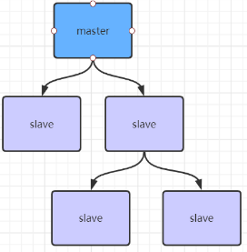
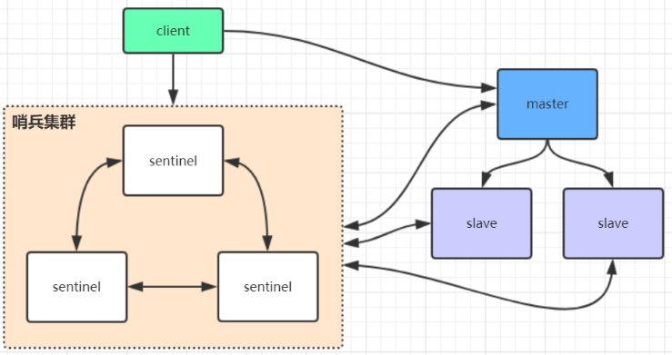

Redis数据持久化的三种方式，基本的架构模型，主从架构和哨兵架构。主从架构是哨兵架构以及后续的分布式集群架构的基础。
Redis持久化
RDB（Redis DataBase）快照（snapShot）
基本设置
1 | 在redis配置文件中做如下配置即可，redis在满足配置时就会自动进行持久化到本地文件中 |
save和bgsave
| 命令 | save | bgsave |
|---|---|---|
| IO类型 | 同步 | 异步 |
| 是否阻塞Redis其他命令 | 是（操作时会阻塞，所有命令无法继续写入） | 否（生成子进程执行调用fork函数时，会有短暂阻塞） |
| 复杂度 | O(n) | O(n) |
| 优点 | 不会消耗额外内存 | 不阻塞客户端命令 |
| 缺点 | 阻塞客户端命令 | 需要fork子进程，消耗内存 |
优点
1、整个Redis数据库将只包含一个文件 dump.rdb，方便持久化。
2、容灾性好，方便备份。
3、性能最大化，fork 子进程来完成写操作，让主进程继续处理命令，所以是 IO 最大化。使用单独子进 程来进行持久化，主进程不会进行任何 IO 操作，保证了 redis 的高性能
4、相对于数据集大时，比 AOF 的启动效率更高。
缺点
1、数据安全性低。RDB 是间隔一段时间进行持久化，如果持久化之间 redis 发生故障，会发生数据丢 失。所以这种方式更适合数据要求不严谨的时候)
2、由于RDB是通过fork子进程来协助完成数据持久化工作的，因此，如果当数据集较大时，可能会导 致整个服务器停止服务几百毫秒，甚至是1秒钟。
AOF(append-only file)
基本配置
1 | appendonly yes |
aof保存的是最新的set操作命令
AOF（Append Only File）重写
以日志的形式记录服务器所处理的每一个写、删除操作，查询操作不会记录，以文本的方式记录，可以 打开文件看到详细的操作记录。
基本配置
1 | aof重写会将一些无用命令重新合并，最终数据肯定还是和原先的一致 |
AOF还可以手动重写，进入redis客户端执行命令bgrewriteaof重写AOF
注意，AOF重写redis会fork出一个子进程去做(与bgsave命令类似)，不会对redis正常命令处理有太多影响
RDB和AOF对比
| 命令 | RDB | AOF |
|---|---|---|
| 启动优先级 | 低 | 高 |
| 体积 | 小 | 大 |
| 恢复速度 | 快 | 慢 |
| 数据安全性 | 容易丢数据 | 根据策略决定 |
优点
1、数据安全，Redis中提供了3中同步策略，即每秒同步、每修改同步和不同步。事实上，每秒同步也 是异步完成的，其效率也是非常高的，所差的是一旦系统出现宕机现象，那么这一秒钟之内修改的数据 将会丢失。而每修改同步，我们可以将其视为同步持久化，即每次发生的数据变化都会被立即记录到磁 盘中。
2、通过 append 模式写文件，即使中途服务器宕机也不会破坏已经存在的内容，可以通过 redis-check-aof 工具解决数据一致性问题。
3、AOF 机制的 rewrite 模式。定期对AOF文件进行重写，以达到压缩的目的
缺点
1、AOF 文件比 RDB 文件大，且恢复速度慢。
2、数据集大的时候，比 rdb 启动效率低。
3、运行效率没有RDB高
AOF文件比RDB更新频率高，优先使用AOF还原数据。
AOF比RDB更安全也更大
RDB性能比AOF好
如果两个都配了优先加载AOF
Redis4.0后的混合持久化
基本配置
1 | 混合持久化是基于aof持久化的优化，使用混合持久化必须先开启aof |
Redis数据备份策略
- 写crontab定时脚本，每个小时复制一份Redis持久化文件
- 每天都保留一份数据，保留最新一月或根据需求保存，方便可随时恢复至任意日期
- 每天复制数据时，删除最早数据，以免浪费内存
- 多机备份，定期将备份文件复制只不同数据备份机器
Redis数据恢复
将Reids备份文件，放在Redis对应的备份文件路径下重启服务即可
Redis主从架构

基本配置
1 | 1、复制一份redis.conf文件 |
全量复制
从节点首次同步数据或长时间断开链接，主节点和从节点之前数据差超过了master节点缓存队列中的数据时会采用全量复制
部分复制
master会在其内存中创建一个复制数据用的缓存队列，缓存最近一段时间的数据，master和它所有的slave都维护了复制的数据下标offset和master的进程id，因此，当网络连接断开后，slave会请求master继续进行未完成的复制，从所记录的数据下标开始。如果master进程id变化了，或者从节点数据下标offset太旧，已经不在master的缓存队列里了，那么将会进行一次全量数据的复制。
主从复制风暴

Redis哨兵高可用架构

基本配置
1 | 1、复制一份sentinel.conf文件 |
操作中遇到的问题
- 配置主从模式时，要注意主节点不能配置replicaof
- bind 0.0.0.0

...
...
Copyright 2021 sunfy.top ALL Rights Reserved